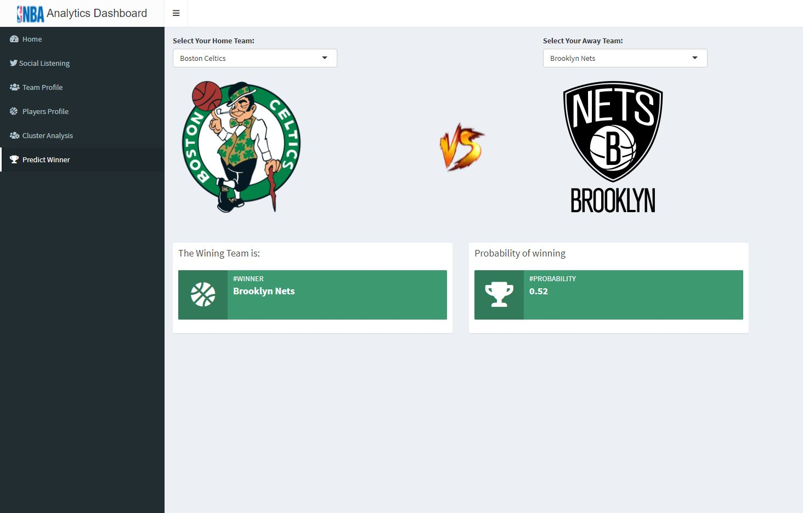
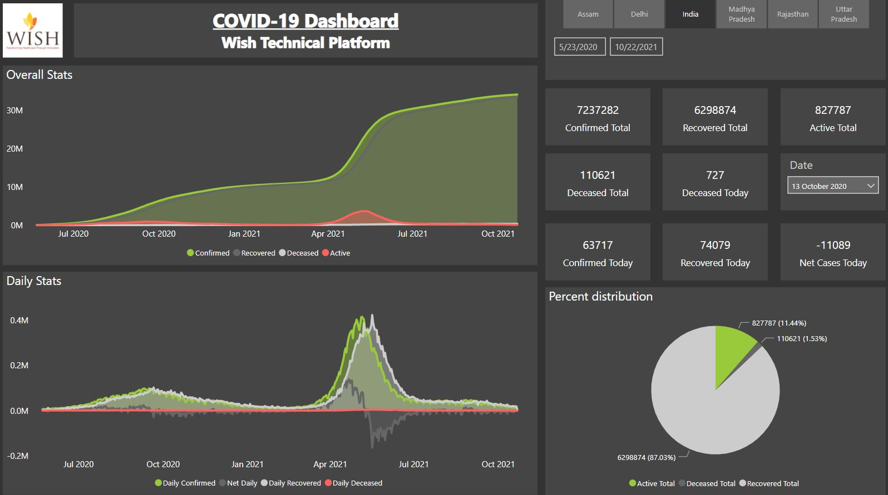
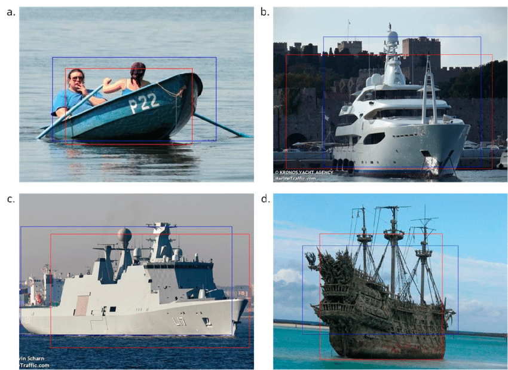

My Name Is
Harsh Vardhan Singh Kalra
A graduate student with deep technical and data science expertise and a wealth of experience in applying advanced analytics to various business situations in political, healthcare, and financial sectors for more than three years. Pursuing a Master’s in Analytics from Purdue University, I am working on an independent project with Professor Zhang, Yichen to identify optimal stocks, building an investment portfolio, and comparing performance based on the Sharpe ratio calculated on test-set.
NBA Analytics and Game
Prediction Dashboard

Created a predictive model using decision trees and logistic regression to predict the probability of home team winning a basketball match in NBA league and built a UI using R shiny to showcase team and player performance in latest season.
Coronavirus(COVID-19)
Tableau Dashboard - I

Created a Power BI Dashboard displaying the Cases and Deathes caused by the novel Coronavirus (Covid -19) throughout the world. This dashboard gives the user the ability to check the number of cases/deaths on any day and person can toggle between cases and death to display it on map.
Face Mask Detection
In a Live Video
In the new world of coronavirus, multidisciplinary efforts have been organized to slow the spread of the pandemic. In order to train a custom face mask detector, we need to break our project into two distinct phases, each with its own respective sub-steps: Training Here we’ll focus on loading our face mask detection dataset from disk, training a model (using Keras / TensorFlow) on this dataset, and then serializing the face mask detector to disk Deployment:Once the face mask detector is trained, we can then move on to loading the mask detector, performing face detection, and then classifying each face as with_mask or without_mask
Multi-Categorization of Boat Sales Advertisements
Using Deep Learning

Multi-Categorization of Boat Sales Advertisements:
MobileNetV2 transfer-learning model with 86% accuracy for images & random forest with 67% accuracy for text were trained in ensemble to identify and classify different types of ship adverts on craigslist. This project intends to solve the problem of spam advertisements and give the users a good experience. This project consists of applying Image Classification and NLP concepts & techniques towards the detection of spam advertisements.